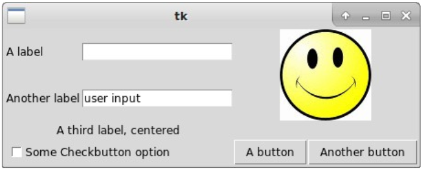

1 Graphical User Interfaces
Computing devices are indeed ubiquitous. We use them all the time for a variety of tasks. To use them, we must inherently interact with them. In fact, there’s an entire branch of computer science that deals with the way humans interact with machines (primarily computing machines) called human-computer interaction (HCI). In this lesson, we will focus on the way that we typically interact with computing devices: through graphical user interfaces.
A graphical user interface (GUI – pronounced “gooey”) is a type of interface that allows users to interact with computing machines through graphical entities. An interface is just a program that provides a way of interacting with a computing machine so that a user can use it to do its bidding!
The interface typically monitors input (e.g., clicking with the mouse, typing on the keyboard, etc) and controls output (e.g., the result of inputs rendered to a monitor). GUIs are the most common type of interface between humans and computers. In fact, most software products and virtually all popular computer operating systems are GUI-based.
Formally, GUIs implement an interface metaphor, such as a desktop, that allows users to interact with computer systems. Software objects, such as programs and data files, are generally represented as postage stamp sized pictures called icons. A human can access one of these objects by selecting it with a pointing device, such as a mouse. When opened, an icon expands to become a window. A window is a portion of the computer screen used to communicate with a particular program. Generally, windows and icons can be resized (i.e., made larger or smaller) and repositioned anywhere on the desktop. But of course, you already know all this!
1.1 GUI components
Although the types of components that make up a GUI can vary depending on operating system, application, and various other factors, there are many standard ones that virtually all GUIs support:
• Window: an area on the screen that displays information.
• Menu: allows users to execute commands by selecting from a list of options.
• Icon: a small picture that represents something else (e.g., a file, an application, a command).
• Control: also known as a widget, a component that users directly interact with (e.g., by clicking, dragging, etc) to perform some task (e.g., launch an application, set a configuration setting, etc). There are many types of controls that you may be familiar with: list, label, check box, radio button, slider, spinner, and so on.
• Tab: a way of grouping GUI components in an area of a window.
1.2 Events
On their own, GUIs really do nothing. That is, they are specifically designed for user interaction. Users must interact with a GUI, and when that happens, an event occurs that triggers some sort of action. An action can be virtually anything, such as opening a file, launching an application, performing a background task, and so on. We often say that some GUI components listen for user interaction; that is, they implement what is known as a listener. When the listener detects user interaction (e.g., through a mouse click), the interaction is registered as an event. The event then triggers some predefined action that handles it and typically produces some output that is expected by the user.
1.3 They Python Tkinter library
By default, Python does not support GUIs. That is, Python is text-based. In fact, the majority of programming languages are text-based. The print statement, for example, displays text to the console (the terminal on the RPi, for example). It does not, for example, display text to a graphical window or on a label positioned somewhere on the user’s desktop. The integration and support of GUIs in programming languages is typically done through internal or external libraries that provide the objects and tools necessary to create GUIs and to allow users to interact with GUIs.
Although there are many GUI libraries that work with Python, this lesson will focus on one of the more common and popular ones that is included with Python by default and is cross-platform (i.e., it can be used to create GUIs on a variety of computing machines and operating systems). This GUI library is called Tkinter (For more information: https://wiki.python.org/moin/TkInter).
The Tkinter library is complex, yet it is powerful enough to create just about any GUI that a programmer would need. It would not be possible to cover the entire library in a single lesson. Therefore, we will take the approach of introducing the most frequently used components that Tkinter supports. Subsequently, we will show how to create a few simple GUIs that demonstrate a few of the different types that can be created.
1.4 A Tkinter primer
Tkinter stands for “Tk interface.” Tk is a GUI toolkit that has been around for a while and was originally developed by the same folks that created the Java programming language. Tkinter is an object-oriented layer that provides a Python interface to the Tk GUI toolkit.
The first thing we must do to use the Tkinter library in a Python program is to import it via:
from tkinter import *Although there are various ways to import the library, the above is the most common method of doing so that reduces the amount of source code required.
The typical manner in which GUIs are created using the Tkinter library is to create a window on which other components are placed. Let’s look at a simple program that creates a window and places a label on it:
1: from tkinter import *
2: window = Tk()
3: text = Label(window, text="GUIs in Python are pretty easy!")
4: text.pack()
5: window.mainloop()Here’s the output of this short program:
Let’s explain the program, line-by-line. You already know the statement on line 1 that imports the Tkinter library. The statement on line 2 creates a graphical window (that is stored in the variable window). This must always be done in order to create a GUI using the Tkinter library. Line 3 creates a Tkinter Label, which is a component that is used to display text, an icon, or an image on a GUI. The label, which has the text “GUIs in Python are pretty easy!”, is stored in the variable text and is bound (or attached) to the window as its child. These explain the parameters passed in to the constructor of the Label class defined in the Tkinter library. The pack function called on line 4 is used on all Tkinter widgets. In this case, it instructs the label to size itself to fit the specified text and to make itself visible on the window. However, the GUI is not actually shown on the desktop until the statement on line 5. This statement instructs the window to appear on the desktop and wait for the user to interact with it. It will remain on the desktop until the user closes the window (in this case, by clicking on the X at the topright of the window).
Let’s try a more standard way of creating GUIs using the Tkinter library. This method uses the objectoriented paradigm to encapsulate the GUI in a class that inherits from a Tkinter Frame. Here’s the program:
1: from tkinter import *
2: class App(Frame):
3: def __init__(self, master):
4: Frame.__init__(self, master)
5: self.button1 = Button(master, text="BYE!",\
6: fg="red", command=self.quit)
7: self.button1.pack(side=LEFT)
8: self.button2 = Button(master, text=\
9: "Say something!", command=self.say)
10: self.button2.pack(side=LEFT)
11: def say(self):
12: print("Froot Loops!")
13: window = Tk()
14: app = App(window)
15: window.mainloop()Here’s the resulting GUI:

Clicking on the BYE! button closes the application. Clicking on the Say something! button displays the string “Froot Loops!” to the console each time it is clicked.
Let’s explain the statements of the program as we did before, in the order that they are executed. Clearly, line 1 imports the Tkinter library. Lines 2 through 12 define the App class and are not yet executed. Line 13 creates the main window of the GUI. Line 14 creates a new instance of the App class, passing the main window as a parameter (it becomes the parent of any GUI components created in the App class). This launches the constructor of the App class which begins on line 3. Since the App class is a subclass of the Tkinter Frame class, the constructor of the Frame class is first called on line 4. This initializes a Tkinter Frame, which serves as a holder for other GUI components. A Tkinter Button (called button1) is then instantiated as an instance variable on lines 5 and 6. It is set as a child of the window (called master in the App class), given the text “BYE!” colored in red, and instructed to execute the function quit when clicked. The function quit is defined in the Tkinter library. For a frame, it simply closes it.
Line 7 makes the button visible. Note the parameter: side=LEFT. This places the button as far left as possible in the frame. The default is TOP, which places a component as far to the top as possible. A second button, button2, is instantiated in lines 8 and 9. This button is instructed to execute the function say when clicked, which is defined in the App class (on lines 11 and 12). The button is also positioned as far left as possible (next to button1). The function say simply displays the text “Froot Loops!” to the console.
Finally, line 15 displays the GUI and allows the user to interact with it.
1.5 Common Tkinter widgets
Before we go on to create more elaborate GUIs, let’s discuss a few of the more common Tkinter (in general, GUI) widgets. In fact, the Tkinter library supports fifteen core widgets:
• Button: a button that can be used to execute an action when clicked.
• Canvas: used to draw graphs, plot points, create drawings, etc.
• Checkbutton: a button that can represent two distinct values by being checked or unchecked.
• Entry: used to provide text-based user input.
• Frame: a container that can group other widgets.
• Label: used to display text or an image.
• Listbox: used to display a list of options that the user can select from.
• Menu: used to implement pull-down menus by grouping menu items.
• Menubutton: a single menu item that is used in pull-down menus.
• Message: like a Label, used to display text; however, it is more configurable.
• Radiobutton: a button in a group of buttons that represents one of the values associated with the group.
• Scale: supports the selection of a numeric value by dragging a slider.
• Scrollbar: provides horizontal and vertical scroll bars for various GUI components.
• Text: supports formatted text, including embedded images and even windows.
• Toplevel: a container that can be displayed as a separate window on top of other components.
Discussing all of these widgets in detail and showing how they can be used in GUIs is beyond the scope of this lesson. If you wish, you can visit many online tutorials to see these widgets (and more) used in the creation of GUIs.
1.5.1 Configuring widgets
Most Tkinter widgets can be configured as they are instantiated by specifying various parameters in the constructor. Here’s an example with the Button widget shown above:
b = Button(master, text="Submit", fg="blue", bg="yellow")Another way of configuring a widget is to invoke its config function. In general, a widget, w, can be configured as follows:
w.config(option=value, option=value, ...)For example:
b.config(text="Send", fg="red")1.5.2 Positioning widgets
Widgets can be positioned in the main window or in a frame using a variety of layouts. The one that has been used in previous examples is called the pack manager. It configures widgets in rows and columns. Options such as fill, expand, and side, help determine where a widget is placed and how it behaves graphically. The pack manager is good for placing a single widget and having it fill an entire container. It is also good for placing widgets next to each other vertically or horizontally.
The pack manager’s fill option is used to have a widget fill the entire space assigned to it. There are several values that can be assigned to this option: BOTH makes the widget expand both horizontally and vertically; X makes the widget expand only horizontally; and Y makes the widget expand only vertically.
The pack manager’s expand option is used to assign any additional space in a container to a widget. That is, if the parent container has any remaining space after packing all widgets, it will be distributed among all widgets that have the expand option set to a non-zero value.
The pack manager’s side option is used to specify which side of the container to place the widget against. Values for this option are: TOP (the default) which packs widgets vertically; LEFT which packs widgets horizontally; BOTTOM which packs a widget against the bottom; and RIGHT which packs a widget to the right. Note that, although these values can be mixed, the results may not be as intended. Of course, you can easily experiment!
Here’s an example of aligning Tkinter Labels vertically, while expanding them horizontally:
from tkinter import *
window = Tk()
l1 = Label(window, text="A", bg="red", fg="white")
l1.pack(fill=X)
l2 = Label(window, text="B", bg="green", fg="white")
l2.pack(fill=X)
l3 = Label(window, text="C", bg="blue", fg="white")
l3.pack(fill=X)
window.mainloop()And here’s the output (note that the window was manually resized to be larger horizontally):

And here’s a GUI aligning the labels horizontally, expanding them horizontally, and expanding only the middle one vertically:
from tkinter import *
window = Tk()
l1 = Label(window, text="A", bg="red", fg="white")
l1.pack(side=LEFT, expand=1, fill=X)
l2 = Label(window, text="B", bg="green", fg="white")
l2.pack(side=LEFT, expand=1, fill=BOTH)
l3 = Label(window, text="C", bg="blue", fg="white")
l3.pack(side=LEFT, expand=1, fill=X)
window.mainloop()And here’s the output (again, the window was manually resized):

There is a much more powerful and flexible layout manager in the Tkinter library called the grid manager. It also configures widgets in rows and columns; however, each widget’s row and column (and how it behaves in its position in the row and column) can be individually specified. For the purpose of this lesson, the row and column in which a widget is placed is known as a cell. The grid manager supports several options: row, column, sticky, columnspan, and rowspan.
The row option is a numeric value that specifies which row in the grid the widget should be placed in. Rows begin at 0. The column option is a numeric value that specifies which column in the grid the widget should be placed in. Similarly, columns begin at 0.
The sticky option aligns the widget based on several values: N aligns the widget to the North (i.e., the top); S aligns the widget to the South (bottom); E aligns the widget to the East (right); and W aligns the widget to the West (left). Values can be combined; for example, NE aligns the widget to the Northeast (top-right). They can also be stacked; for example, N+S expands the widget vertically, E+W expands the widget horizontally, and N+S+E+W expands the widget both vertically and horizontally.
The columnspan option allows a widget to span multiple columns. Similarly, the rowspan option allows a widget to span multiple rows.
Here’s a first example using the grid manager:
from tkinter import *
window = Tk()
l1 = Label(window, text="A label")
l1.grid(row=0, column=0)
l2 = Label(window, text="Another label")
l2.grid(row=1, column=0)
e1 = Entry(window)
e1.grid(row=0, column=1)
e2 = Entry(window)
e2.grid(row=1, column=1)
window.mainloop()The program creates two labels and two text entry fields. Here’s its output:

Notice how the labels are, by default, aligned in the center of their cell. We can force them to be aligned to the left by slightly modifying the source code as follows:
from tkinter import *
window = Tk()
l1 = Label(window, text="A label")
l1.grid(row=0, column=0, sticky=W)
l2 = Label(window, text="Another label")
l2.grid(row=1, column=0, sticky=W)
e1 = Entry(window)
e1.grid(row=0, column=1)
e2 = Entry(window)
e2.grid(row=1, column=1)
window.mainloop()Note how the sticky option has been added to the two labels. Here’s the output of the modified program:

Let’s add more widgets to see how the rest of the grid manager options can be used. First, however, it is good practice to doodle by drawing what it is that we are trying to accomplish, especially for GUIs that are complicated (typically, that’s when there are more than just a few widgets). Here’s a quick mock-up of what the GUI will look like:

For clarity, here are the widget variable names, and their types and descriptions:
• l1: a Label with the text “A label”, left-aligned in row 0, column 0.
• l2: a Label with the text “Another label”, left-aligned in row 1, column 0.
• l3: a Label with the text “A third label, centered”, centered horizontally in row 2, spanning across columns 0 and 1.
• l4: a Label with a “smiley” image (100x100 pixels), centered horizontally and vertically, spanning across rows 0 and 1, and columns 2 and 3.
• e1: an empty Entry, centered horizontally in row 0, column 1.
• e2: an Entry with the text “user input”, centered horizontally in row 1, column 1.
• c1: a Checkbutton with the text “Some Checkbutton option”, left-aligned in row 3, spanning across columns 0 and 1.
• b1: a Button with the text “A button”, centered horizontally in row 3, column 2.
• b2: a Button with the text “Another button”, centered horizontally in row 3, column 3.
Before we get to the source code that creates this GUI, let’s take a look at the end result:

Now, let’s build the code to create this GUI, a little at a time. We’ll start with the following:
from tkinter import *
class GUITest(Frame):
def __init__(self, master):
...
def setupGUI(self):
...
window = Tk()
t = GUITest(window)
t.setupGUI()
window.mainloop()At this point, all that’s been done is to create the main window. Note that we will be implementing the GUI as a class (called GUITest) that inherits from the Tkinter Frame class. That is, it’s just a frame on which other widgets will be placed. The GUITest class will, of course, have a constructor. We’ll also implement a setupGUI function that does the bulk of instantiating and positioning the widgets. This explains the statement t.setupGUI() in the main part of the program at the bottom. The process is to first create the main window, then create the instance of the GUITest class (which is a frame), then invoke its setupGUI function to create the GUI, and finally to display the GUI with the statement window.mainloop().
Let’s work on the constructor of the GUITest class:
def __init__(self, master):
Frame.__init__(self, master)
self.master = masterThe constructor first calls the constructor of its superclass (the Frame class). Then, it declares an instance variable, master, that stores the main window. This is necessary so that the setupGUI function can add widgets as children of the main window.
Now on to the setupGUI function. We’ll build the function a little at a time. First, let’s add the first label, l1:
def setupGUI(self):
l1 = Label(self.master, text="A label")
l1.grid(row=0, column=0, sticky=W)The first statement instantiates a new Label, makes it a child of the main window (again, called master in the GUITest class), and sets its text. The second statement defines its properties with respect to the grid manager. It is to be positioned in row 0, column 0, and is to be left-aligned (to the West).
The next label, l2, is similarly created; however, it is to be positioned in row 1, column 0, and has different text:
l2 = Label(self.master, text="Another label")
l2.grid(row=1, column=0, sticky=W)The third label is centered across two columns (0 and 1; therefore, it spans across two columns) in row 2. It also sets the sticky option to E+W, meaning that it will evenly split any leftover space within its container to the left and right (i.e., it will be centered):
l3 = Label(self.master, text="A third label, centered")
l3.grid(row=2, column=0, columnspan=2, sticky=E+W)The fourth and final label is an image that is centered across two rows (0 and 1) and two columns (2 and 3). Images are handled a bit differently than text. The image must first be loaded from a file and stored in a variable. This is done by using Tkinter’s PhotoImage class:
img = PhotoImage(file="smile.gif")Note that the specified image file must be located in the same directory as the Python program. The label can then be created, with the image set as its contents:
l4 = Label(self.master, image=img)
l4.image = img
l4.grid(row=0, column=2, columnspan=2, rowspan=2,\
sticky=N+S+E+W)The second statement appears to be redundant. That is, the first seems to assign the variable img as the label’s image; however, the second statement seems to do the same thing. It turns out that an image created using the PhotoImage class is “garbage collected” when a function that created it terminates. Once the setupGUI function terminates, the image disappears from the GUI. To prevent this from happening, we can keep an extra reference to the image. The second statement does this. The sticky option is set to N+S+E+W, which centers the image both horizontally and vertically.
Next, the first text entry is created, centered in row 0, column 1:
e1 = Entry(self.master)
e1.grid(row=0, column=1)As mentioned earlier, widgets are centered by default when positioned using the grid manager. The second text entry widget is similarly added; however, it is in row 1, column 1. In addition, it contains default text that is added by using the insert function in the Entry class. This is accomplished by inserting text at the END position of the text entry widget:
e2 = Entry(self.master)
e2.insert(END, "user input")
e2.grid(row=1, column=1)The Checkbutton widget is left-aligned in row 3 and spans across columns 0 and 1:
c1 = Checkbutton(self.master,\
text="Some Checkbutton option")
c1.grid(row=3, column=0, columnspan=2, sticky=W)Finally, the two buttons are added. The first button is centered in row 3, column 2:
b1 = Button(self.master, text="A button")
b1.grid(row=3, column=2)And the second button is centered in row 3, column 3:
b2 = Button(self.master, text="Another button")
b2.grid(row=3, column=3)This completes the setupGUI function. Here’s a complete listing of the function for reference:
from tkinter import *
class GUITest(Frame):
def __init__(self, master):
Frame.__init__(self, master)
self.master = master
def setupGUI(self):
l1 = Label(self.master, text="A label")
l1.grid(row=0, column=0, sticky=W)
l2 = Label(self.master, text="Another label")
l2.grid(row=1, column=0, sticky=W)
l3 = Label(self.master, text="A third label, centered")
l3.grid(row=2, column=0, columnspan=2, sticky=E+W)
img = PhotoImage(file="smile.gif")
l4 = Label(self.master, image=img)
l4.image = img
l4.grid(row=0, column=2, columnspan=2, rowspan=2,\
sticky=N+S+E+W)
e1 = Entry(self.master)
e1.grid(row=0, column=1)
e2 = Entry(self.master)
e2.insert(END, "user input")
e2.grid(row=1, column=1)
c1 = Checkbutton(self.master, text=\
"Some Checkbutton option")
c1.grid(row=3, column=0, columnspan=2, sticky=W)
b1 = Button(self.master, text="A button")
b1.grid(row=3, column=2)
b2 = Button(self.master, text="Another button")
b2.grid(row=3, column=3)
window = Tk()
t = GUITest(window)
t.setupGUI()
window.mainloop()As a final example, let’s create a GUI on which two-dimensional points are plotted in various colors as follows:

The Canvas widget allows plotting points, among other useful things. It is quite important to note that the top-left of the canvas is the origin with the coordinates (0,0). It is possible to shift the origin, but this is beyond the scope of this lesson.
Continuing with the strategy of implementing a class that inherits from a Tkinter widget, we’ll structure this example such that our user-defined class, Points, inherits from Tkinter’s Canvas class. Since some of the points that will be plotted are random (that is, with random x- and y-coordinates), the randint function of Python’s random class will be used. For flexibility, several constants will be defined: the width and height of the window, the various colors that points can be plotted in, the radius of the points, and the total number of points to plot. Structuring the program in this way will make it very easy to quickly test the program with different parameters
Let’s take a look at the source code:
from tkinter import *
from random import randint
WIDTH = 400
HEIGHT = 400
POINT_COLORS = [ "black", "red", "green", "blue" ]
POINT_RADIUS = 0
NUM_POINTS = 2500
class Points(Canvas):
def __init__(self, master):
Canvas.__init__(self, master, bg="white")
self.pack(fill=BOTH, expand=1)
def plotPoints(self, n):
for i in range(WIDTH):
self.plot(i, i)
self.plot(WIDTH - i - 1, i)
for i in range(n):
x = randint(0, WIDTH - 1)
y = randint(0, HEIGHT - 1)
self.plot(x, y)
def plot(self, x, y):
color = POINT_COLORS[randint(0, len(POINT_COLORS) - 1)]
color2 = POINT_COLORS[randint(0, len(POINT_COLORS) - 1)]
self.create_oval(x, y,\
x + POINT_RADIUS * 2,\
y + POINT_RADIUS * 2,\
outline=color, fill=color2)
window = Tk()
window.geometry("{}x{}".format(WIDTH, HEIGHT))
window.title("Check out these points!")
p = Points(window)
p.plotPoints(NUM_POINTS)
window.mainloop()By default, the width and height of the main window is defined to be 400x400 pixels. Knowing that the top-left of the canvas is the origin, then the bottom-right must have the coordinates (399,399). The points are plotted in four colors: black, red, green, and blue. Using the Canvas class, points are drawn as ovals. An oval is specified by a rectangular bounding box (specifically by its top-left and bottomright coordinates). If these coordinates are the same, the the oval is just a point. You will see how the constant POINT_RADIUS will be used in a later example. Finally, 2,500 points are plotted.
The main part of the program (at the bottom of the source code) should be familiar. There are, however, two new statements. The first sets the width and height of the window (collectively known as the window’s geometry):
window.geometry("{}x{}".format(WIDTH, HEIGHT))This statement sets the window’s dimensions to the values of the constants WIDTH and HEIGHT. The second statement sets the window’s title (the text at the top of the window):
window.title("Check out these points!")The final three statements create the GUI, plot the points, and display the GUI on the desktop.
Let’s take a look at the Points class:
1: class Points(Canvas):
2: def __init__(self, master):
3: Canvas.__init__(self, master, bg="white")
4: self.pack(fill=BOTH, expand=1)
5: def plotPoints(self, n):
6: for i in range(WIDTH):
7: self.plot(i, i)
8: self.plot(WIDTH - i - 1, i)
9: for i in range(n):
10: x = randint(0, WIDTH - 1)
11: y = randint(0, HEIGHT - 1)
12: self.plot(x, y)
13: def plot(self, x, y):
14: color = POINT_COLORS[randint(0,\
15: len(POINT_COLORS) - 1)]
16: self.create_oval(x, y, x + POINT_RADIUS * 2,\
17: y + POINT_RADIUS * 2, outline=color)The constructor of the Points class first calls the constructor of its superclass, Tkinter’s Canvas class. Note that the constructor can take various configuration parameters. In this case, the background is additionally set to white. The canvas is then configured to expand horizontally and vertically to fill the main window (i.e., it will expand to fit in the 400x400 pixel window).
The plotPoints function does the bulk of generating the points to plot. The first part of the code (in lines 6 through 8) generates the set of points required to produce an X shape in the GUI. The variable i iterates from 0 through 399 (all valid x- and y- coordinate locations on the canvas). The first set of points generated have matching coordinates (e.g., (0,0), (1,1), (2,2), and so on). This forms the set of points from the top-left to the bottom-right of the canvas. The second set of points generated have opposite coordinates with respect to the width of the canvas. That is, when the x-component is 0, the ycomponent is 399; when the x-component is 1, the y-component is 398; and so on. This forms the set of points from the bottom-left to the top-right of the canvas.
The second part of the plotPoints function (in lines 9 through 12) generates n random points (2,500 in the case of the program above). Recall that the randint function takes a closed interval. That is, the first and last parameters passed in to the function express the valid range of random integers to generate, inclusive of the low and high values.
Finally, the plot function (in lines 13 through 17) actually plots the points on the canvas. First, in lines 14 and 15, a color is randomly selected from the list of colors that was defined as a constant near the top of the program. Next, an oval is drawn on the canvas within the specified bounding box. With the current set of parameters, the oval is just a point with no radius. The oval is drawn in the randomly selected color by specifying its outline to be of that color
We can observe the behavior of the create_oval function in the Canvas class a bit more by changing the radius of the points to something larger (say, 2) by modifying the POINT_RADIUS constant at the top of the program as follows:
POINT_RADIUS = 2The output of the program looks a bit different:

The “points” now have a radius that is greater than 0. The bounding box of a “point” is defined by the x- and y-coordinates of the point and the point’s radius. The top-left of the bounding box is just the xand y-coordinates of the point. The bottom-right takes the radius into account. That is, the coordinates of the point really represent its top-left “corner”, while its bottom-right “corner” is adjusted to account for the specified radius (twice, in fact, to make up the entire diameter). When we keep the radius the same for both corners of the bounding box, the oval becomes a circle. In fact, a circle is just a special case of an oval.
We can actually fill the points as well by slightly modifying the statement on lines 16 and 17:
16: self.create_oval(x, y, x + POINT_RADIUS * 2,\
17: y + POINT_RADIUS * 2, outline=color, fill=color)We include a fill option that takes a color that the center of the oval will be filled with. Clearly, an oval can have two different colors: one for its outline, and one for its “inside”.
Here’s the output of the program with the fill option set as specified above:

Lastly, here’s the output of the program with the fill option set to a random color, and the outline option set to another random color (note that it is possible that both colors are the same):